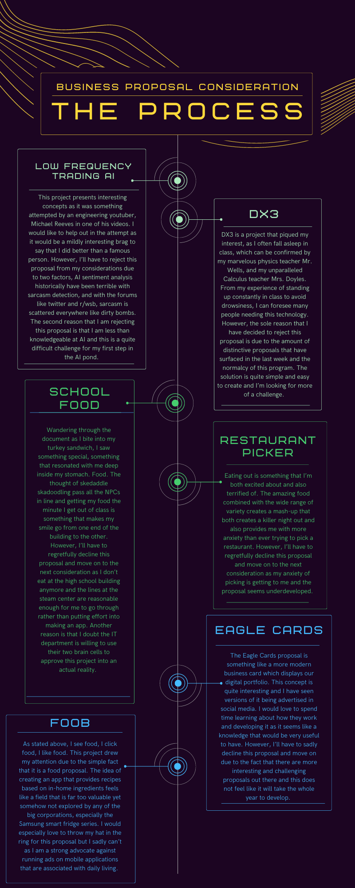
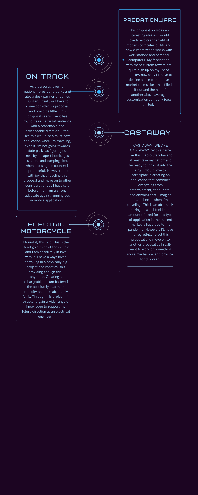

Links:
ISP Proposal #1:
Low Frequency Trading AI
https://www.codermerlin.com/users/gautam-narayan/Digital%20Portfolio/CS-II/Projects/Business%20Plan/index.html
ISP Proposal #2:
DX3
https://www.codermerlin.com/users/akshay-vemulapalli/Digital%20Portfolio/CS-III/Projects/Business%20Plan/index.html
ISP Proposal #3:
School Food
https://www.codermerlin.com/users/brett-kaplan/Digital%20Portfolio/CS-II/Projects/Business%20Plan/index.html
ISP Proposal #4:
Restaurant Picker
https://www.codermerlin.com/users/andrew-nguyen/Digital%20Portfolio/CS-II/Projects/Business%20Plan/index.html
ISP Proposal #5:
Eagle Cards
https://www.codermerlin.com/users/aryan-kulkarni/Digital%20Portfolio/CS-III/Projects/Business%20Plan/index.html
ISP Proposal #6:
Foob
https://www.codermerlin.com/users/faraz-piracha/Digital%20Portfolio/CS-II/Projects/Business%20Plan/index.html
ISP Proposal #7:
Predationware
https://www.codermerlin.com/users/farhan-ishraque/Digital%20Portfolio/CS-II/Projects/Business%20Plan/index.html
ISP Proposal #8:
On Track
https://www.codermerlin.com/users/james-dungan/Digital%20Portfolio/CS-II/Projects/Business%20Plan/index.html
ISP Proposal #9:
Castaway’
https://www.codermerlin.com/users/lilly-seeley/Digital%20Portfolio/CS-III/Projects/Business%20Plan/index.html
ISP Proposal #10:
Electric Motorcycle
https://www.codermerlin.com/users/nimrod-ohayon-rozanes/Digital%20Portfolio/CS-III/Projects/Business%20Plan/index.html